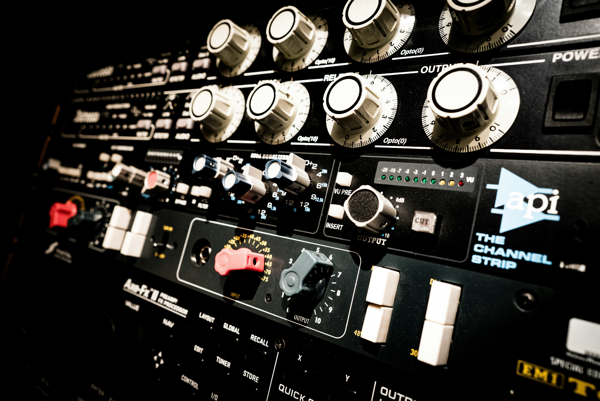

Kompresja to jeden z tematów, przy którym wielu początkujących producentów zatrzymuje się na długo. Brzmi technicznie, parametry mają nieoczywiste nazwy, a efektu działania nie zawsze słychać wyraźnie - przynajmniej na początku. A jednak jest to jedno z najważniejszych narzędzi w produkcji muzycznej, bez którego profesjonalne brzmienie pozostaje poza zasięgiem. W tym artykule tłumaczymy kompresję od podstaw, bez żargonu - i pokazujemy, kiedy i jak jej używać.
Czym jest dynamika w muzyce i dlaczego ją kontrolujemy
Dynamika to różnica między najcichszymi a najgłośniejszymi momentami w nagraniu. Ludzki głos, gitara akustyczna, wokal - wszystkie te instrumenty mają naturalnie dużą dynamikę: ciche fragmenty i głośne wybuchy. W muzyce na żywo to żywe, naturalne brzmienie. W nagraniu studyjnym może być problemem.
Wyobraź sobie wokal, w którym refren jest dwa razy głośniejszy niż zwrotka. Przy równym ustawieniu głośności (fader) zwrotka będzie za cicha, a refren za głośny. Zanim zajmiesz się brzmieniem, musisz opanować dynamikę - zrównoważyć poziomy tak, żeby każda część wokalu była słyszalna i czytelna w miksie. Do tego służy kompresor.
Co robi kompresor - wyjaśnienie bez żargonu
Kompresor to automatyczny regulator głośności. Gdy sygnał przekroczy ustawiony próg głośności (threshold), kompresor automatycznie go przycisza - zmniejsza wzmocnienie o określoną proporcję. Gdy sygnał spada poniżej progu, kompresor przestaje działać i głośność wraca do normy.
Analogia samochodowa: wyobraź sobie pedał gazu. Kiedy naciskasz go mocno (głośny fragment), ktoś delikatnie kładzie nogę na hamulec, żebyś nie przyspieszył za bardzo. Kiedy jedziesz wolno (cichy fragment), nikt nie ingeruje. To właśnie robi kompresor - reaguje na zbyt głośne momenty, łagodząc je, nie ruszając cichych.
Parametry kompresora - threshold, ratio, attack, release, makeup gain
Każdy kompresor, niezależnie od marki i modelu, ma kilka kluczowych parametrów. Ich zrozumienie to podstawa sensownego używania kompresji.
Threshold - próg działania
Threshold określa, od jakiego poziomu głośności kompresor zaczyna działać. Jeśli ustawisz go na -20 dBFS, kompresor uruchomi się za każdym razem, gdy sygnał przekroczy -20 dBFS. Analogia: to wysokość poprzeczki, powyżej której zaczyna się ograniczenie. Im niższy threshold, tym więcej sygnału będzie kompresowane.
Ratio - proporcja kompresji
Ratio mówi, o ile kompresor przycisza sygnał powyżej threshold. Ratio 4:1 oznacza: za każde 4 dB powyżej progu, na wyjściu pojawi się tylko 1 dB. Ratio 2:1 to delikatna kompresja (często używana na bębnach do spójności); 10:1 i więcej to twarda kompresja bliska limiterowi. Analogia: ratio to jak mocno ta noga wciska hamulec.
Attack - czas reakcji
Attack to czas, jaki mija od momentu przekroczenia threshold do pełnego zadziałania kompresora. Mierzony w milisekundach. Krótki attack (1-5 ms) łapie nawet krótkie szczyty; długi attack (50-100 ms) przepuszcza początkowy impuls (transient), zanim kompresor zacznie działać. Długi attack na perkusji zachowuje naturalne uderzenie i atak; krótki spłaszcza brzmienie.
Release - czas powrotu
Release to czas, po którym kompresor przestaje działać, gdy sygnał spada poniżej threshold. Za krótki release powoduje efekt "pompowania" (słyszalny rytmiczny wzrost i spadek głośności); za długi sprawia, że kompresor nie zdąży się zwolnić przed kolejnym silnym uderzeniem. Właściwy release jest kluczem do naturalnie brzmiącej kompresji.
Makeup gain - kompensacja głośności
Kompresja zmniejsza głośność sygnału. Makeup gain (lub output gain) pozwala podnieść ogólną głośność po kompresji do pożądanego poziomu. To nie zwiększa dynamiki - po prostu przywraca głośność, którą straciłeś na skutek kompresji. Ważne: reguluj makeup gain po skonfigurowaniu threshold i ratio.

Gdzie stosuje się kompresję
Kompresja to jedno z tych narzędzi, które stosuje się praktycznie wszędzie - ale z różną intensywnością i w różnym celu.
Wokal
Najczęstsze zastosowanie. Wokal ma ogromną dynamikę - od szeptu do krzyku. Kompresor wyrównuje poziomy, sprawia, że każde słowo jest słyszalne w miksie i nadaje głosowi spójność. Typowe ustawienie startowe: ratio 3:1-4:1, attack 10-20 ms, release 50-100 ms.
Bębny
Na bębnach kompresja służy do dwóch rzeczy: spójności zestawu i kształtowania charakteru. Kompresor na stopie nadaje jej "klik" lub "bum" w zależności od attack. Kompresor na całym zestawie (bus compression) skleja bębny w jedną zwartą całość.
Bas
Bas ma naturalnie nierówne poziomy - niektóre nuty są głośniejsze od innych. Kompresja wyrównuje dynamikę basu i sprawia, że pewnie siedzi w miksie bez wyskakiwania w górę w niespodziewanych momentach.
Master bus
Delikatna kompresja na sumie stereo (master bus) skleja ze sobą wszystkie elementy miksu i nadaje mu spójność. Tu najważniejsza jest subtelność - 1-2 dB redukcji gain przy ratio 2:1. Przekompresowanie mastera to najczęstszy błąd na tym etapie.
Sidechain compression - czym jest i po co się go używa
Sidechain to technika, w której kompresor na jednej ścieżce jest wyzwalany (triggerowany) przez sygnał z innej ścieżki. Klasyczny przykład: kompresor na basie wyzwalany przez stopę. Za każdym razem, gdy stopa uderza, bas jest chwilowo przyciszany - bas i stopa razem tworzą spójny "dołek" rytmiczny, nie tłoczą się w tym samym zakresie. To technika używana praktycznie w każdej profesjonalnej produkcji elektronicznej.
Inny popularny przykład: kompresor na muzyce tła wyzwalany przez lektora w podcastach - gdy lektor mówi, muzyka automatycznie się przycisza (ducking).
Przekompresowanie - jak je rozpoznać i unikać
Przekompresowanie to jeden z najczęstszych problemów w domowych produkcjach. Objawia się kilkoma charakterystycznymi symptomami:
- Pompowanie - słyszalny, rytmiczny wzrost i spadek głośności całego miksu; klasyczny efekt zbyt krótkiego release na bus kompresji.
- Spłaszczenie dynamiki - utwór traci emocje; ciche fragmenty brzmią tak samo jak głośne, przez co muzyka jest monotonna i męcząca.
- Utrata transjentów - perkusja traci "klik" i atak; bębny brzmią miękko i bez charakteru.
- Zniekształcenie przy niskich ratio + niski threshold - kompresor pracuje nieustannie, sygnał brzmi przesterowany i bez przestrzeni.
Test przekompresowania: Porównaj miks z kompresją i bez (bypass) przy tym samym poziomie głośności. Jeśli wersja bez brzmi bardziej naturalnie i dynamicznie - zmniejsz ilość kompresji. Celem jest "nie słyszeć" kompresora - ma działać, nie dominować.
Kompresor a limiter - różnica i zastosowanie
Limiter to kompresor z bardzo wysokim ratio - zwykle 10:1 lub więcej (tzw. "brick wall"). Jego zadanie jest proste: upewnić się, że sygnał nigdy nie przekroczy określonego poziomu. Gdzie kompresor delikatnie przycisza szczyty, limiter je twardym cięciem zatrzymuje.
W praktyce: kompresor służy do kształtowania dynamiki i charakteru brzmienia (miękko, muzycznie), a limiter do ochrony przed clippingiem i maksymalizacji głośności na etapie masteringu. Każdy profesjonalny master kończy się limiterem ustawionym na 0 dBFS lub -0,3 dBFS, chroniącym przed cyfrowym przesterowaniem przy konwersji do formatów dystrybucyjnych.
Chcesz zrozumieć pełen obraz procesu, w którym kompresja odgrywa rolę? Przeczytaj artykuł o różnicach między miksem a masteringiem - to dwa osobne etapy, z bardzo różnym podejściem do kompresji. Jeśli dopiero zaczynasz naukę miksu, zajrzyj też do przewodnika po equalizerze (EQ) - EQ i kompresja to dwa narzędzia, których zawsze używa się razem.
A jeśli Twój miks brzmi świetnie w słuchawkach, ale gubi się na głośniku telefonu - kompresja i EQ to dwa narzędzia, od których zaczniesz naprawiać problem. Sprawdź poradnik o dlaczego mix brzmi inaczej na głośnikach.
Najlepsza kompresja to taka, której nie słyszysz. Pracuje w tle, wyrównuje, scala - i pozwala muzyce oddychać.